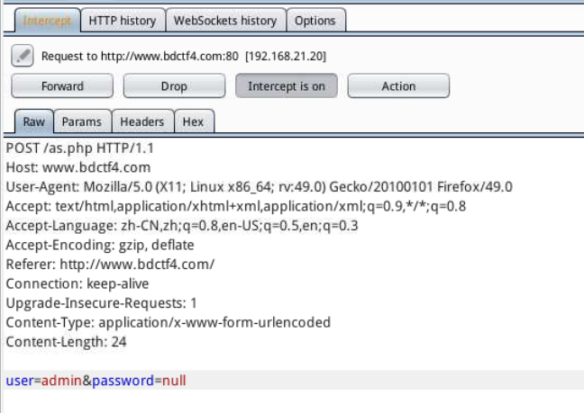
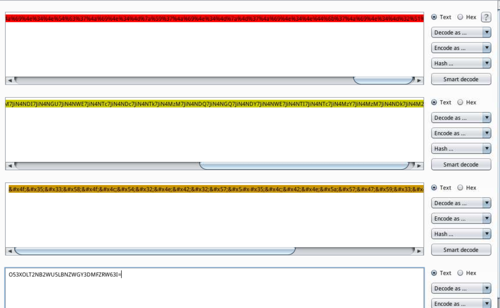

2018-10-10
总共30道题，其中有11道题不会。
1、三个flag之FTP中的秘密（tips:www.bdctf1.com，请使用kali答题）
这个题用nmap扫描到了匿名登陆，然后使用anonymous密码为空登陆了一下，上去后没有找到东西。
爆破字典也没有给。
2、三个flag之连接数据库的钥匙（tips:www.bdctf1.com，请使用kali答题）
第一题没法解决第二题第三题也没办法解决了
3、三个flag之提权的魔力（tips:www.bdctf1.com，请使用kali答题）
同上
4、都来签到吧（tips：请使用Windows答题）
这道题才算是正式开始写，怪我太菜。
打开题目，直接搜索flag，flag就出现了
flag：flag{bdqiandaochu}
5、蓝盾安全，与你同行。（tips:www.bdctf3.com，请使用kali答题）
进入网站后提示，需要使用蓝盾浏览器。所以修改UA

回显出现flag
flag：flag{bluedon28d76ud}
6、慢点，慢点，再慢点。（tips:www.bdctf4.com，请使用kali答题）
打开后发现让输入密码，提示密码为空，点了提交后发现密码错误。这是想到密码为空也可以填写Null。
提交了null的密码以后发现页面跳转到了bs.php

这时候需要BP抓包POST提交看一下回显，是否flag隐藏在了跳转过程中

继续Forward
这时发现，他GET进入了一个名叫lll.html的静态页面
但是我们一输入浏览器就发现他自动跳转到bs.php的页面了
这时就需要我们继续用Bp进行发包看一下lll.html的回显
直接出现了flag
flag：flag{bluedon9892}
7、听说静静的密码丢了。（tips:www.bdctf5.com，请使用kali答题）
这道题登陆上来以后，发现一句话
然后打开审查元素，查看密码框输入的最大位数是多少位？ 这里发现最大位是4位
生成个4位纯数字字典，直接用BP爆破，方法就不写了，网上百度吧。（笨方法可以这样用）
这里顺便说一下，如果是爆破4~5位的字符数字，直接用bp自带的就好，可以不用生成。
具体设置：
设置完毕以后
成功爆破出结果：6245
flag:flag{bluedon28367s2s}
8、会中文不是万能的（tips:www.bdctf6.com，请使用kali答题）

这个提示说文章不允许使用中文去浏览，那么就抓包修改下Accept-Language:zh-CN(中文)只要改掉这个就行。
我们随便改一个
flag就出来了
flag: flag{bluedon28367s2s}
9、猪圈陷阱（tips:请使用kali答题）
发现是个url编码，直接用bp的好功能，直接进行编码转换就行

发现转换完毕以后是个base64解密
这里顺便说一下，根据颜色来辨别解密过的类型。
最后的编码转换过程是：url解码 => base64 => html => base32
因为bp里面没有Base32，所以最后我们用python来解密
脚本如下：
最后结果：www.zhujuanllll.com
登陆上去以后发现
给了明文和密码表，直接照着表解密就好（不会看的上百度上百度去）
最后结果：NZCASFMZOH，但是不管怎么提交都提交不上，很烦。然后将密码表反过来，再次尝试解密

然后再解密，就能得到密文为：maxzhunals
flag{maxzhunals}
10、仔细寻找（tips:www.bdctf7.com，请使用kali答题）
发现登陆后跟那个第6题差不多，先抓个包看看
输入进去 ctrl+R进去GO一下看看：
发现还是密码错误
命令行：nikto -host www.bdctf7.com
发现了一个login.php的页面
出现了个新的账号和密码，输入进去重新Go一下
发现了个baozang .html的页面，然后进去看一下
发现无论怎么输入，都没反应，这时候看下源代码，发现了两个有用的代码。
第一段代码隐藏了两端文字：
第二段没有加载上，但是有用，宝藏的钥匙应该是编辑框内的值+.html拼接，应该是个页面
两段文字中第一段是MD5，第二段是base64。解密一下后，发现第一段是6个数字：078623
第二段文字解密后：6weishuzi
然后咱们登陆一下078623.html这个页面
flag就出来了
flag：flag{tgp272509bx}
11、奇奇怪怪的路径？（tips:www.bdctf9.com，请使用kali答题）
由题目可以知道，这个跟网站路径有关，所以咱们先扫描一下他网站的路径看看。
命令行：nikto -host www.bdctf9.com

这里发现了robots.txt这个路径，咱们进去看一下。一般这个路径作用就是被搜索引擎收录时起到禁止访问某些固定页面的作用，所以我们要进去看一下。
然后我们登陆一下Disallow:/admin+login//bluedon.asp
flag就出来了
flag: flag{bluedon2333}
12、探险（tips:www.bdctf0.com，请使用kali答题）
直接打开源代码，拉到最后，看到了一段代码，发现他将这串数字转换成了ascii码。但是没显示出来
所以我们要拷贝下来从桌面新建个1.txt保存在里面再写脚本进行转换一下。
1 | f = open("/root/桌面/1.txt","r") |
结果：
这里转换出来以后发现是个程序代码
1 | function check() |
这里href 超链接部分发现了Base64，继续用脚本转换一下看看
*flag:flag{oklnjihzbchgpalpdjgnnqnn?ads_sanujn}**
13、这是小静的自拍照，你能找到亮点吗？（tips：请使用Windows答题）
打开后是一张美女的图片，但是没什么卵用，jpg的后缀，用winhex打开后，发现文件尾部隐藏了个PK的文件头，说明隐藏了个压缩包，所以我们要将他分离出来。全程将文件最好拖进kali里面进行比较方便。用工具里面的winSCP进行发送，过去以后进行foremost命令或者binwalk命令分离。（笨方法）
这里我用的是手动扣出来，然后保存了一下。
压缩包出来以后，解压一下，然后发现是个数据包。很多学长说kali里面没有wireshark ，命令行输入wireshark 就打开了在kali里面。
然后发现是个Ping命令的包，在ICMP协力的数据包里面查看data块里面的数据发现flag，但是都被拆开了

最后一个一个拼接出来以后就是flag了
flag:flag{5efv38f2}
14、真真假假（tips：请使用Windows答题）
这道题的考点其实就是修复数据，就是步骤有点繁琐
打开后发现了个数据包，用wireshark打开以后，导出http的对象，发现有很多的asp的页面，但是其中有一个upfile.asp的是一个包，里面涵盖了一个RAR的数据包，但是损坏了。我们需要用windows里面的winrar修复一下，然后正常解压就出现flag了。
解压一下就出flag
flag:flag{bluedon85249}
15、莫名的用户（tips：请使用kali答题）
这道题不会
16、混合编码（tips：请使用kali答题）
这道题打开以后发现两个文件，总的就是说明将base3264.txt这个文件里面的文件进行转换，最后出现flag。
写个脚本进行转换就OK
1 | # -*- conding:utf-8 -*- |
然后进终端里面直接python运行就OK。
flag:flag{bluedon852}
17、恐怖的字条（tips：请使用Windows答题）
进去后看到两个文本，第二个为培根密码表，很显然，这道题肯定是得用培根密码解密
第一个文本发现了加密的密文

培根密码都知道5位为一段，所以刚刚好，前四段肯定是flag。对应密码表里面的flag所对应的表可以知道他的规律就是，因为字母前12个为A 后12个为B
A: a b c d e f g h i j l m
B:n o p q r s t u v w x y z
然后5个为一段，对应出来就行了。
flag:flag{tftrbqs}
平台老是蹦，后面的不写了。